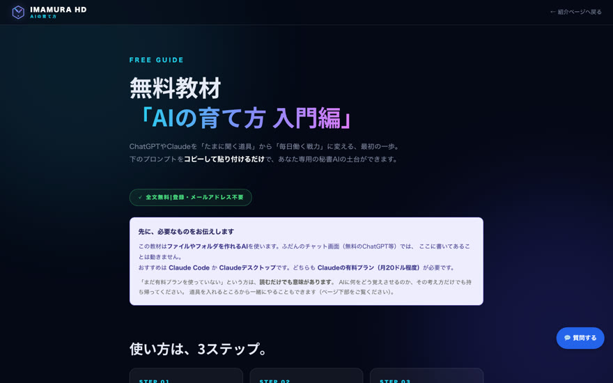
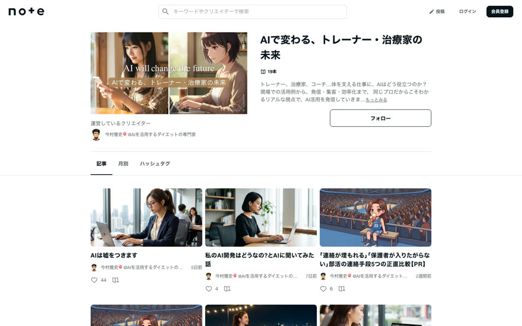

02 / WORKS
実際に、動いているもの。

作戦盤 TEAM BOARD
部活動のチーム共有アプリ。作戦盤・動画・出欠・連絡が1つに。ログイン不要で操作できます。
デモを触る
コマ撮りスタジオ
画像を並べるだけでコマ撮りアニメを作り、動画で書き出せます。インストール不要、どなたでも使えます。
使ってみる
AIの育て方 入門編
コピーして貼るだけで、あなた専用の秘書AIの土台ができます。読むだけで終わらない教材です。
教材を読む
note マガジン
体を支える仕事に、AIはどう役立つのか。現場での使い方と失敗を、全部無料で公開しています。
記事を読む